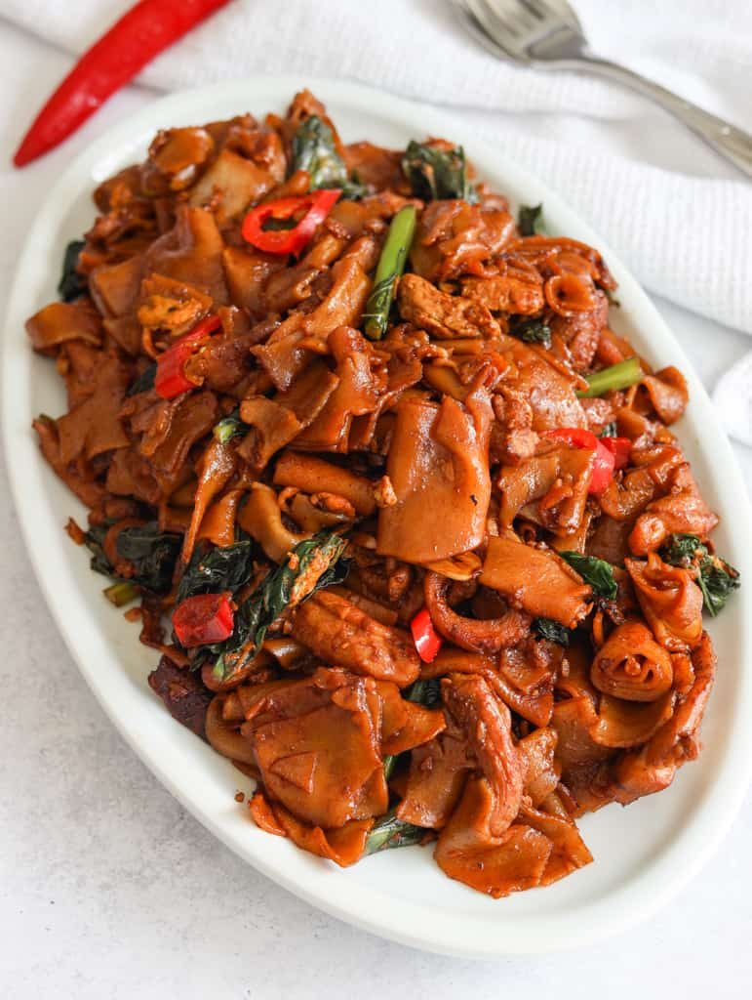

Pad See Ew Recipe

At home Pad See Ew
Pad See Ew is a popular Thai noodle dish. This Thai dish is made rice noodles tossed in a savory sauce with gai-lan, chicken, garlic, red chili and vinegar over high temperatures for that smoky flavor (aka wok hei). You'll find this popular street food served at many Thai restaurants and it's quite similar to drunken noodles.
Ingredients
Noodle Sauce
Steps
- Marinate sliced chicken with oyster sauce. Set aside to marinate as you prepare other ingredients.
- Wash gai lan in cold water and trim the ends. Cut gai lan into 2-inch-long pieces. If the stalks are very thick, slice them into thinner pieces or only use the leafy parts.
- In a small bowl, combine Noodle Sauce ingredients.
- Microwave or steam fresh rice noodles for 3 minutes (or more) on high heat until softened and pliable. Let them
Gently separate fresh rice noodle rolls from each other. Then vertically split each rice noodle roll into half so they're easier to eat. (Or you horizontally slice the rice noodle rolls into 1-inch wide pieces and then unroll them like in the pictures/video but this takes more time).
Using dry rice noodles? Follow package directions or soak them in lukewarm water for 30 minutes or in hot boiling water for 1 minute, until limp but firm to touch. Strain, gently separately them. No need to cut them.
- In a large wok or large skillet on medium-high heat, add 1 tablespoon of oil. Fry sliced chicken until cooked through, 2-4 minutes. Remove and set aside.
- Reduce to low heat, add ½ tablespoon of oil. Fry minced garlic and red chili for 10 seconds. Add in gai lan. Fry for 1 minute until greens are tender. Sweep everything to the side.
- Add ½ tablespoon oil, pour in eggs. Break the yolks, let eggs cook and then break apart. Toss with other ingredients and sweep everything to the side.
- Increase to high heat, add ½ tablespoon oil into the empty space. Toss in rice noodles and noodle sauce. Mix until noodles are coated in sauce and most sauce has evaporated.
- Add back in chicken and toss. Optional: Let the noodles char a bit in the pan for smoky flavor. Serve and enjoy!